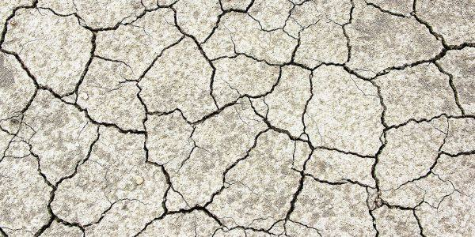

En raison des fortes chaleurs et du manque de précipitations, la situation hydrologique continue de se dégrader dans le Bas-Rhin. La nappe « Lauter, Sauer, Moder et Zorn », dont dépend Hœnheim, est désormais placée en alerte sécheresse renforcée par la Préfecture.
Cette situation d’alerte fait l’objet de mesures de limitation ou de suspension des usages de l’eau qui concernent l’ensemble des usagers : particuliers, collectivités, entreprises, agriculteurs.
Chaque usager est donc invité à prendre connaissance de l’arrêté préfectoral (en pièce jointe) portant restriction ou interdiction temporaire de certains usages de l’eau en cours et à s’informer des mesures de restriction d’eau sur sa commune et en consultant le site internet Vigieau : https://vigieau.gouv.fr/.
A Hoenheim en « alerte renforcée », les mesures de restrictions impliquent notamment :
- L’interdiction d’arrosage des pelouses
- L’interdiction d’arrosage des espaces verts et massifs fleuris en pleine terre ou en contenants divers ainsi que des terrains de sport de 8h à 20h
- L’interdiction d’arrosage des jardins potagers de 8h à 20h, arrosage uniquement à l’arrosoir ou par goutte à goutte
- L’interdiction de remplissage et vidange de piscines privées (de plus d’1 m3) sauf remise à niveau et première mise en eau si le chantier avait débuté avant les premières restrictions et après accord du gestionnaire du réseau AEP (eau potable)
- L’interdiction du lavage des véhicules sauf dans les stations professionnelles sur les pistes équipées de haute pression ou de système de recyclage (minimum 70 % d’eau recyclée) ou portique programmé ÉCO sur ouverture partielle
- L’interdiction du nettoyage des façades, toitures, trottoirs et autres surfaces imperméabilisées, interdiction sauf si réalisé par une collectivité ou une entreprise de nettoyage professionnel
- L’arrêt des fontaines publiques et privées en circuit ouvert dans la mesure où cela est techniquement possible, les prélèvements sont régis par les différentes dispositions de l’arrêté